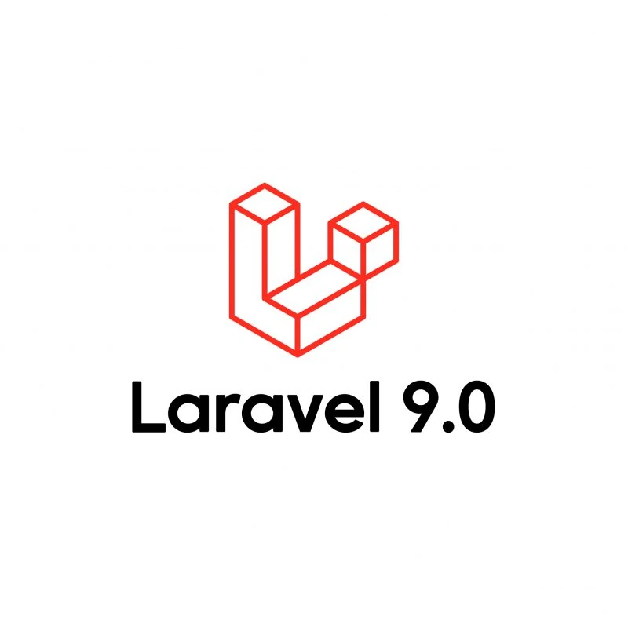

Titulo Curso
- Valor:
- Tiempo de dedicacion necesario:
- Descripcion del curso:
- Requisitos Previos:
Contenidos por clase
Introduccion
More info about the details.
Clase 1
More info about the details.
Clase 2
More info about the details.

Docente
- Brendan Eich
- Calificacion
Cursos relacionados:


- Nombre curso
- Duracion
- Precio
- Nombre curso
- Duracion
- Precio